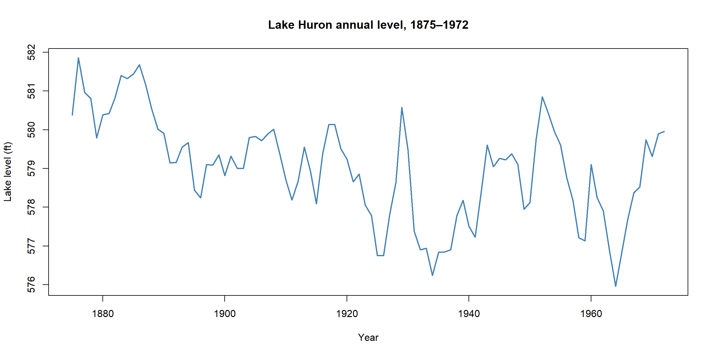
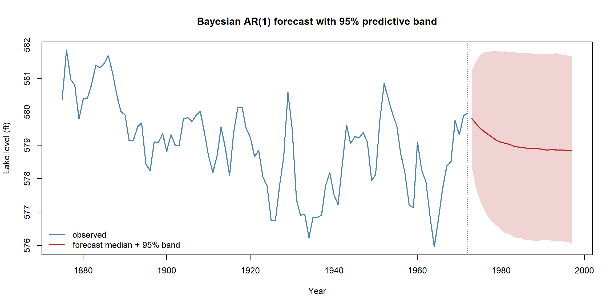

flowchart LR D["Observed series<br/>y₁ … yₙ"] --> M["Fit a time-series model<br/>(MCMC → posterior for θ)"] M --> S["For each posterior draw,<br/>simulate the future forward"] S --> F["Posterior predictive forecast<br/>a full distribution per horizon<br/>→ median + credible band"]
Bayesian Forecasting: Time Series
Everything so far has estimated a parameter from data already in hand. Forecasting points the same machinery at the future: given a series observed up to today, what happens next? This is where the Bayesian approach really shines. A classical forecast hands you a point prediction with an interval bolted on; a Bayesian forecast hands you an entire predictive distribution for every future time point, built by propagating two sources of uncertainty at once — uncertainty about the model’s parameters, and the inherent randomness of future shocks. It is the posterior predictive check from the worked-examples page, simply run forwards in time.
A simple time-series model: the AR(1)
The workhorse starting model is the first-order autoregression, AR(1): each value is a fraction of the previous one plus a fresh random shock. \[ y_t = c + \phi\, y_{t-1} + \epsilon_t, \qquad \epsilon_t \sim \mathcal N(0, \sigma^2). \] Three parameters: an intercept \(c\), the autoregressive coefficient \(\phi\) (how strongly today depends on yesterday), and the shock size \(\sigma\). For the series to be stationary — to revert toward a stable level rather than wander off — we need \(|\phi| < 1\), which we encode as a flat prior on \((-1, 1)\).
NoteIn a nutshell: what AR(1) says
“Tomorrow looks like a shrunk-down version of today, plus a random nudge.” If \(\phi = 0.8\), each year keeps 80% of this year’s deviation from the long-run average and forgets the rest. The closer \(\phi\) is to 1, the longer the memory and the slower the series drifts back to its mean.
We use R’s built-in LakeHuron — the annual level of Lake Huron from 1875 to 1972 — a classic, gently autocorrelated series.
Code
```{r}
#| fig-align: center
y <- as.numeric(LakeHuron)
n <- length(y)
plot(1875:1972, y, type = "l", lwd = 2, col = "steelblue",
xlab = "Year", ylab = "Lake level (ft)",
main = "Lake Huron annual level, 1875–1972")
```
Fitting it the Bayesian way (MCMC)
There is no conjugate shortcut here, so we reuse the Metropolis sampler from the Bayesian computation page. The likelihood is the AR(1) model written as a product of normals — each \(y_t\) is normal around \(c + \phi y_{t-1}\) — and we sample \(\sigma\) on the log scale (keeping it positive) with the usual Jacobian correction.
Code
```{r}
#| warning: false
#| message: false
yPrev <- y[-n] # y_{t-1} (t = 2 … n)
yCurr <- y[-1] # y_t
# log posterior for par = (c, phi, log sigma)
logPost <- function(par) {
cc <- par[1]; phi <- par[2]; sigma <- exp(par[3])
if (abs(phi) >= 1) return(-Inf) # stationarity: flat prior on (-1, 1)
ll <- sum(dnorm(yCurr, mean = cc + phi * yPrev, sd = sigma, log = TRUE))
lp <- dnorm(cc, 0, 100, log = TRUE) + # weak priors
dnorm(sigma, 0, 10, log = TRUE)
ll + lp + par[3] # + Jacobian for log sigma
}
set.seed(1)
# Seed the sampler at the ordinary least-squares AR(1) fit (a sensible starting point)
ols <- lm(yCurr ~ yPrev)
start <- c(coef(ols)[[1]], coef(ols)[[2]], log(summary(ols)$sigma))
nIter <- 20000
step <- c(6, 0.05, 0.10) # random-walk step sizes per parameter
chain <- matrix(NA, nIter, 3, dimnames = list(NULL, c("c", "phi", "logSigma")))
cur <- start; lpCur <- logPost(cur); nAcc <- 0
for (i in seq_len(nIter)) {
prop <- cur + rnorm(3, 0, step)
lpProp <- logPost(prop)
if (log(runif(1)) < lpProp - lpCur) {
cur <- prop; lpCur <- lpProp; nAcc <- nAcc + 1
}
chain[i, ] <- cur
}
nAcc / nIter # acceptance rate (aim for roughly 0.2–0.5)
```[1] 0.00245Drop the burn-in and read off the posterior for each parameter:
Code
```{r}
draws <- chain[-(1:4000), ]
post <- cbind(draws[, c("c", "phi")], sigma = exp(draws[, "logSigma"]))
round(t(apply(post, 2, function(z)
c(mean = mean(z), `2.5%` = quantile(z, 0.025), `97.5%` = quantile(z, 0.975)))), 3)
``` mean 2.5%.2.5% 97.5%.97.5%
c 90.164 66.138 103.116
phi 0.844 0.822 0.886
sigma 0.730 0.658 0.833The posterior for \(\phi\) sits well inside \((-1,1)\) and clearly above 0 — strong, persistent year-to-year memory — with a credible interval that quantifies how sure we are. We have not a single fitted model but a whole population of plausible AR(1) models, weighted by the posterior. That is precisely what makes the forecast honest.
Forecasting: simulate the future forward
Here is the Bayesian forecasting recipe in full. For each posterior draw \((c, \phi, \sigma)\), start from the last observed value and roll the AR(1) equation forward, drawing a fresh shock \(\epsilon_t\) at every step. Each draw produces one possible future path; together, thousands of paths trace out the posterior predictive distribution at every horizon.
Code
```{r}
set.seed(2)
h <- 25 # forecast 25 years ahead
nDraw <- nrow(draws)
paths <- matrix(NA, nDraw, h) # one simulated future per posterior draw
for (d in seq_len(nDraw)) {
cc <- draws[d, "c"]; phi <- draws[d, "phi"]; sigma <- exp(draws[d, "logSigma"])
prev <- y[n] # start from the last observation
for (t in seq_len(h)) {
prev <- cc + phi * prev + rnorm(1, 0, sigma) # AR(1) step with a new random shock
paths[d, t] <- prev
}
}
# Summarise the cloud of paths into a median and a 95% predictive band per year
bands <- apply(paths, 2, quantile, c(0.025, 0.5, 0.975))
```Code
```{r}
#| fig-align: center
obsYears <- 1875:1972
fYears <- 1973:(1972 + h)
plot(obsYears, y, type = "l", lwd = 2, col = "steelblue",
xlim = c(1875, max(fYears)), ylim = range(y, bands),
xlab = "Year", ylab = "Lake level (ft)",
main = "Bayesian AR(1) forecast with 95% predictive band")
polygon(c(fYears, rev(fYears)), c(bands[1, ], rev(bands[3, ])),
col = adjustcolor("firebrick", 0.2), border = NA)
lines(fYears, bands[2, ], lwd = 2, col = "firebrick")
abline(v = 1972, lty = 3, col = "grey50")
legend("bottomleft", bty = "n", lwd = 2, col = c("steelblue", "firebrick"),
legend = c("observed", "forecast median + 95% band"))
```
The forecast shows the signature shape of an autoregressive prediction: the median decays back toward the series’ long-run mean, while the band fans out as we look further ahead and uncertainty compounds. Crucially, that band already includes both kinds of uncertainty — we did not know the parameters exactly (different draws), and the future is random anyway (the shocks) — without a single extra formula.
The Bayesian pay-off: ask any question of the future
Because a forecast is a full distribution of simulated futures, any question becomes a simple count over the paths matrix — no new theory, just mean(). What is the probability the lake drops below 578 ft a decade from now?
Code
```{r}
mean(paths[, 10] < 578) # posterior predictive P(level < 578 ft in year 10)
```[1] 0.228625That single number — a genuine probability about the future — is the kind of statement a frequentist forecast cannot make, and it falls straight out of the simulated paths. You could just as easily ask for the chance of a record low, or the probability of two consecutive years above a threshold, by querying the same matrix.
TipGoing further 🚀
Real forecasting rarely stops at AR(1). The same Bayesian recipe — posterior via MCMC, then simulate forward — scales up through proper probabilistic-programming tools: brms fits autoregressive and many other time-series models with ar() terms in one formula; bsts (Bayesian structural time series) decomposes a series into trend, seasonality and regression components; and full state-space / dynamic linear models live in dlm and KFAS. For the classical (non-Bayesian) comparison, fit the same model with arima(LakeHuron, order = c(1,0,0)) and forecast::forecast() and contrast the prediction intervals with the credible band above.
Summary
| Step | What we did |
|---|---|
| Model | AR(1): \(y_t = c + \phi y_{t-1} + \epsilon_t\), stationary for \(\lvert\phi\rvert<1\) |
| Fit | Metropolis MCMC → joint posterior for \((c, \phi, \sigma)\) |
| Forecast | For each draw, simulate the future forward → posterior predictive paths |
| Summarise | Median + 95% credible band per horizon (the fan) |
| Pay-off | Any probability about the future is a mean() over simulated paths |
Bayesian forecasting is the section’s whole philosophy aimed at tomorrow: keep the full posterior, push it through the model’s forward equation, and read decisions off the resulting distribution of futures — uncertainty about parameters and uncertainty about fate, handled in one honest sweep.